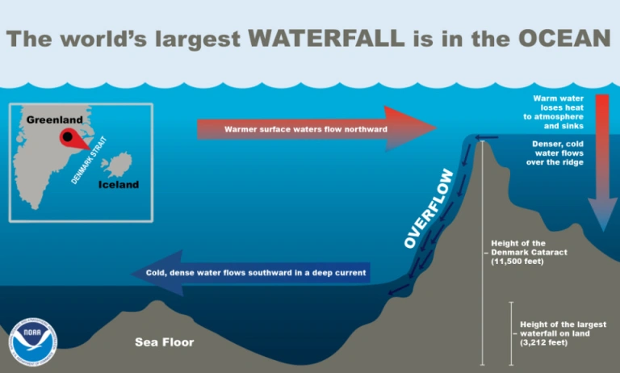

အခု သမုဒ္ဒရာ ကြမ်းပြင် ပင်လယ် ရေအောက် ရေတံခွန် ကြီးဟာ အာဖရိက တိုက် အရှေ့ဖက် ကမ်းလွန်မှာ ရှိတဲ့ မေရစ်သျှ ကျွန်းစုတွေ အနီးမှာ တည်ရှိပါတယ်။ ဒီ ကျွန်းစု တွေဟာ အာဖရိက အရှေ့ဖက် ကမ်းခြေက နေဆို မိုင် ၂,၀၀၀ လောက် ကွာဝေးပါတယ်။
ဒီ ကျွန်းတွေရဲ့ အောက်ခြေမှာ သမုဒ္ဒရာ အောက် ကုန်းပြင်မြင့် တစ်ခု ဖြစ်တည် နေပါတယ်။ မတ်စ်ကာရင်း ကုန်းပြင်မြင့် (Mascarene Plateau) လို့ အမည် ပေးထားတဲ့ ဒီ ပင်လယ်အောက် ကုန်းပြင်မြင့် ရဲ့ အချို့ နေရာ တွေမှာ ပင်လယ် ရေအောက် မီးတောင်တွေလဲ တည်ရှိ ပါတယ်။
ဒီ ရေအောက် မီးတောင်တွေက ထွက်တဲ့ ချော်တွေ အေးခဲပြီး အနည်ကျ ရာကနေ ဖြစ်လာတဲ့ ကျွန်းတွေကိုလဲ ဒီ ကုန်းပြင်မြင့် အနှံ့အပြားမှာ တွေ့ကြရမှာ ဖြစ်ပါတယ်။ အထူးသဖြင့် ကုန်းပြင်မြင့် ရဲ့ မြောက်ဖမ် ခြမ်းနားမှာ ရှိတဲ့ ဆေးရှဲလ် ကျွန်းစုများ (Saychelles Islands) တွေနဲ့ တောင်ဖက် ခြမ်းမှာ ရှိတဲ့ မတ်စ်ကာရင်း ကျွန်းစု (Mascarene Islands) တွေဟာ ထင်ရှားပါတယ်။
ဒီ ကျွန်းစုတွေ ပေါ်မှာ လူသားတွေ မှီတင်း နေထိုင် ခဲ့ကြတာ ရာစု နှစ်ပေါင်း များစွာ ကြာခဲ့ ပါပြီ။
ဒီ ကျွန်းစုတွေ ထဲက ဒုတိယ အကြီးဆုံး ကျွန်းကြီး ဖြစ်တဲ့ မောရစ်သျှ ကျွန်းဟာ ကမ္ဘာပေါ်မှာ အလှဆုံး နေရာ ဒေသ တစ်ခု အဖြစ် လူသိ များကြပါတယ်။ ဒီ မောရစ်သျှ ကျွန်းရဲ့ ကမ်းလွန် မှာ ပင်လယ်ရေအောက် ရေတံခွန် ကြီး တစ်ခု ဖြစ်တည် နေတာပါ။
သိပ္ပံ ပညာရှင် တွေဟာ ဘာ့ကြောင့် ဒီ ရေအောက် ရေတံခွန် ကြီးမှာ ရေတွေဟာ မြင့်ရာက နိမ့်ရာကို စီးဆင်း နေရတာလဲ ဆိုတာကို အဖြေရှာဖို့ သုတေသန အမျိုးမျိုး ပြုလုပ် ခဲ့ကြပါတယ်။ အခုတော့ ဒီ ပဟေဠိကို သိပ္ပံ ပညာရှင်တွေ အဖြေရှာ နိုင်ခဲ့ ကြပါပြီ။
ဒီ ပြဿနာကို အဖြေရှာဖို့ ကြိုးစားရာမှာ ရေအောက် ကုန်းပြင်မြင့် တွေရဲ့ မြေပြင် လက္ခဏာ သွင်ပြင်နဲ့ ပထဝီ အမှတ်အသား တွေဟာ ကုန်မြေပေါ်မှာ ဖြစ်ပေါ်နေတဲ့ မြေမျက်နှာ သွင်ပြင် လက္ခဏာ တွေနဲ့ သဘောသဘာဝ မတူညီပဲ သိသိသာသာ ကွားခြား ကြတယ် ဆိုတာကို သိပ္ပံ ပညာရှင် တွေ အနေနဲ့ အရင်ဆုံး သဘောပေါက် နားလည် လက်ခံ ကြဖို့ လိုပါတယ်။
မြေပြင် တိုက်ကြီးတွေက ကုန်းပြင်တွေဟာ သမုဒ္ဒရာ ရေအောက်က လျှိုတွေ ချိုင့်ဝှမ်း တွေနဲ့ အသွင်ကွဲပြားကြပါတယ်။ ဥပမာ အနေနဲ့ ကုန်မြေတွေဟာ ပင်လယ်ထဲ ရောက်သွားရင် တဖြည်းဖြည်း ပြေပြေလေး လျောဆင်း သွားကြတာ များပါတယ်။ ကမ်းခြေကနေ အတော် ဝေးဝေး မိုင် အနည်းငယ် (အချို့ ဒေသ တွေမှာ မိုင်ပေါင်း များစွာ) သွားပြီးမှ အနက်ပေ သောင်းချီနက်တဲ့ သမုဒ္ဒရာ ရေနက်ပိုင်း ကို ရောက်မှာ ဖြစ်ပါတယ်။
ဒါပေမယ့် ပင်လယ် ရေအောက်က ကုန်းပြင်မြင့်တွေ ကတော့ ဒီလို မဟုတ်ကြ ပါဘူး။ ပင်လယ်ရေအောက် ကုန်းပြင်မြင့်တွေဟာ ရုတ်တရက် အနက်ပေ သောင်းချီတဲ့ ရေနက်ပိုင်းကို ထိုးဆင်းသွားတတ် တာမျိုးပါ။
ဒီတော့ ဒီလို ပင်လယ်အောက် ကုန်းပြင်မြင့် တွေရဲ့ အစွန်းနားမှာ ဖြစ်ပေါ်နေတဲ့ ကျွန်းတွေရဲ့ ကမ်းရိုးတန်း တွေဟာ ထူးခြားတဲ့ လက္ခဏာတွေ ရှိကြပါတယ်။ ဒီလို သမုဒ္ဒရာ အတွင်းက ကျွန်းတွေရဲ့ ကမ်းခြေကနေ မီတာ အနည်းငယ်လောက် ရေကူး သွားရုံနဲ့ သမုဒ္ဒရာ ရေနက်ပိုင်းကို ရုတ်တရက် ရောက်သွားတာမျိုး ကြုံတွေ့ရတတ် ပါတယ်။
ရေအောက် ရေတံခွန် တည်ရှိတဲ့ မေရစ်ရှ ကျွန်းဟာ လွန်ခဲ့တဲ့ နှစ် ၈ သန်း ခန့်ကမှ ဖြစ်ပေါ်လာတာ ဖြစ်ပါတယ်။ ဒီ ကျွန်းဟာ မတ်စ်ကာရင်း ကျွန်းစုတွေ အနက်မှာ ဒုတိယ အကြီးဆုံး ကျွန်းလဲ ဖြစ်ပါတယ်။ အကြီးဆုံး ဖြစ်တဲ့ ရီယူနီယံ (Réunion) ဆို ပိုလို့တောင် သက်တမ်း နုပါ သေးတယ်။
ဒီလို သက်တမ်း နုတဲ့ အတွက် ဒီ ကျွန်းရဲ့ ပတ်လည်မှာ အရမ်းကို နူးညံ့တဲ့ သဲတွေ ဖြစ်ထွန်း နေပါတယ်။ ဒါ့ကြောင့်လဲ ဒီ ကျွန်းတွေမှာ အလွန် လှပတဲ့ ကမ်းခြေတွေ တည်ရှိတာ ဖြစ်ပါတယ်။
ဒီ ကျွန်းပတ်လည်က သဲတွေဟာ ပင်လယ်ရေရဲ့ ပုတ်ခတ် မှုကြောင့် ကမ်းခြေ ပတ်လည်က ပင်လယ် ကြမ်းပြင်ကို လာတင် ကြပါတယ်။ ဒါပမယ့် မောရစ်သျှ ကျွန်းရဲ့ ပတ်လည်က ပင်လယ် ကြမ်းပြင်ဟာ မီတာ အနည်းငယ်ပဲ ကျယ်ပြီးတဲ့နောက် ပင်လယ် ရေနက်ပိုင်းကို ချောက်ကြီး တစ်ခုလို ထိုးဆင်း သွားပါတယ်။
ဒီအခါ ဒီလို ကမ်းခြေ အနီး ပင်လည် ကြမ်းပြင်မှာ လာတင်နေတဲ့ သဲတွေဟာ ဒီချောက်ကြီး ထဲကို ရေံခွန်က ရေတွေ စီးဆင်း သလိုမျိုး စီးဆင်း သွားကြပါတယ်။ ဒါ့ကြောင့် ပင်လယ်ရေ မျက်နှာပြင်က ကြည့်ရင် သဲတွေ ချောက်ထဲ ဆင်းနေတာကို ရေတံခွန်က ရေတွေ စီးကျနေ သလိုမျိုး မြင်ကြရတာ ဖြစ်ပါတယ်။
ဒါဆို ပင်လယ်ရေအောက် ရေတံခွန် တွေမှာ ရေတွေ အထက်က အောက်ကို စီးနေတဲ့ ရေတံခွန်မျိုး မရှိနိုင် တော့ဘူးလား။
ဥရောပတိုက် မြောက်ပိုင်း ဒိန်းမတ် ရေလက်ကြား မှာရှိတဲ့ ဂရင်းလန်း ကျွန်းနဲ့ အိုက်စ်လန် ကျွန်း နှစ်ခုကြားမှာ ပင်လယ်ရေအောက် ရေတံခွန်ကြီး တစ်ခု ဖြစ်နေပါတယ်။ ဒီ ရေတံခွန် ကြီးမှာတော့ ရေတွေဟာ တကယ်ပဲ အမြင့်ပိုင်း ကနေ အနိမ့်ပိုင်းကို စီးဆင်းလို့ နေပါတယ်။
အောက်က ပုံမှာ ပြထား သလို ဒီ ရေအောက် ကြမ်းပြင်မှာ ကုန်တန်း တစ်ခု ဖြစ်ပေါ် နေပါတယ်။ ဒီ ကုန်းတန်းရဲ့ တဖက်ပိုင်းက ရေက အခြား တဖက်ထက် အနည်းငယ် ပိုပြီး တိမ်နေပါတယ်။

ဒီတော့ ရေအေးက ထုံးစံ အတိုင်း ရေနွေးရဲ့ အောက်ကနေ ဖြတ်ပြီး စီးသွားပါတယ်။ ကုန်းတန်းရဲ့ အာတိတ် ဖက်ခြမ်း က ရေအေးတွေဟာ တဖက်ခြမ်းက စီးဆင်းလာတဲ့ ရေနွေး စီးကြောင်းရဲ့ အောက်ကနေပြီး ကုန်းတန်းကို ဖြတ်ပြီး ကုန်းတန်းရဲ့ တဖက် ချောက်ထဲကို ထိုးဆင်း သွားပါတယ်။
ဒါ့ကြောင့် ဒီ ရေတံခွန် မှာတော့ ရေအေး တွေဟာ ရေနွေးတွေရဲ့ အောက်ကနေ ပြောင်းပြန် ပြန်စီးပြီး ရေတံခွန် အတိုင် အမြင့်ကနေ အနိုမ့်ကို တကယ်ပဲ စီးဆင်းလို့ နေပါတယ်။
မေရစ်သျှ ကျွန်းဟာ တကယ်တော့ ပင်လယ်ရေရဲ့ တိုက်စားမှုကြောင့် တဖြည်းဖြည်း ပြုန်းတီးလို့ နေပါတယ်။ နောက်နှစ် သန်းအနည်းငယ် အကြာမှာတော့ ရေတိုက်စား မှုကြောင့် လုံးဝ ပျောက်ကွယ်သွားမယ့် ကျွန်းတစ်ကျွန်းပဲ ဖြစ်ပါတယ်။ ဘာပဲ ဖြစ်ဖြစ် ဒီ ကျွန်း အလွန်က ရေအောက် ရေတံခွန် ကြီးကတော့ နောက်နှစ် သန်း အနည်းငယ် အကြာအထိအောင် လှပဆန်းကြယ်တဲ့ သွင်ပြင် တစ်ခု အနေနဲ့ ဆက်ပြီး ရှိနေအုံးမှာ ဖြစ်ပါတယ်။
Ref: How an “underwater waterfall” came to exist on Mauritius | Big Think